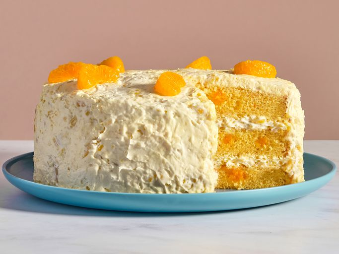

Pig Pickin" Cake

A delicious and creamy cake!
Ingredients
Cake:
- 1 package yellow cake mix
- 1 can mandarin oranges with juice
- 4 large eggs
- 1/4 cup vegetable oli
Frosting:
- 1 package frozen whipped topping, thawed
- 1 can crushed pineapple, drained
- 1 package instant vanilla pudding mix
Recipe steps
-
Gather all ingredients. Preheat the oven to 350 degrees F (175 degrees
C).
-
Prepare the cake: Mix together cake mix, mandarin oranges with juice,
eggs, and oil. Pour batter into three greased and floured 8-inch round
pans. Layers will be thin.
-
Bake in the preheated oven until a toothpick inserted into the center of
cake comes out clean, 25 to 30 minutes. Cool layers on wire racks.
-
Make the frosting: Mix together whipped topping, crushed pineapple, and
instant pudding mix.
-
Spread frosting onto the cooled cake layers. Stack layers; frost top and
sides. Refrigerate until ready to eat.
- Slice and enjoy!
Home